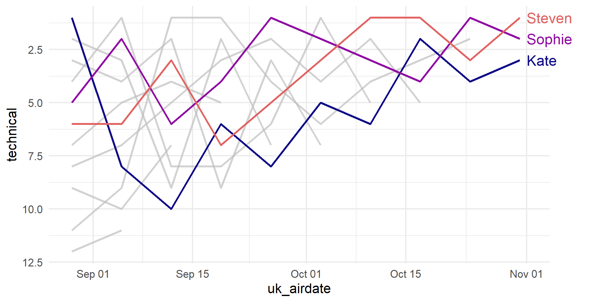
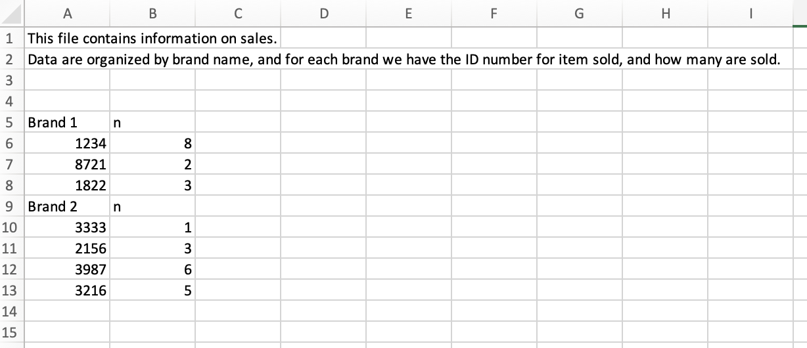
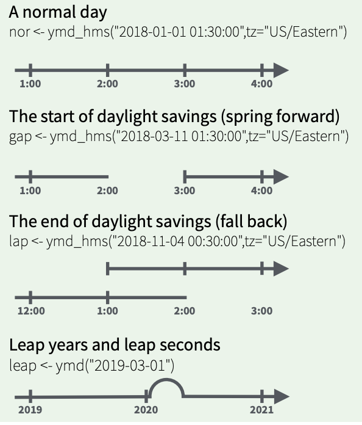

Data Import &
Dates/Times
Day 11
Carleton College
Stat 220 - Spring 2026
Today
- Importing data into R
- Working with dates and times
Basic syntax - Importing Data
All readr functions share a common syntax
readr functions
| function | reads |
|---|---|
| read_csv() | Comma separated values |
| read_csv2() | Semi-colon separated values |
| read_delim() | General delimited files |
| read_fwf() | Fixed width files |
| read_log() | Apache log files |
| read_table() | Space separated |
| read_tsv() | Tab delimited values |
desserts data
Contains results from series 1-8 of The Great British Bake Off
Case defined by series, episode and baker
# A tibble: 549 × 16
series episode baker technical result uk_airdate us_season us_airdate
<dbl> <dbl> <chr> <chr> <chr> <chr> <dbl> <date>
1 1 1 Annetha 2nd IN 17 August 2010 NA NA
2 1 1 David 3rd IN 17 August 2010 NA NA
3 1 1 Edd 1st IN 17 August 2010 NA NA
4 1 1 Jasminder N/A IN 17 August 2010 NA NA
5 1 1 Jonathan 9th IN 17 August 2010 NA NA
6 1 1 Louise N/A IN 17 August 2010 NA NA
7 1 1 Miranda 8th IN 17 August 2010 NA NA
8 1 1 Ruth N/A IN 17 August 2010 NA NA
9 1 1 Lea 10th OUT 17 August 2010 NA NA
10 1 1 Mark N/A OUT 17 August 2010 NA NA
# ℹ 539 more rows
# ℹ 8 more variables: showstopper_chocolate <chr>, showstopper_dessert <chr>,
# showstopper_fruit <chr>, showstopper_nut <chr>, signature_chocolate <chr>,
# signature_dessert <chr>, signature_fruit <chr>, signature_nut <chr>Warm up
Use
read_csv()to import thedessertsdata set from
https://stat220kurtz.github.io/data/desserts.csvStore the data in the
dessertsobjectOur goal is to make the following plot. Will this data allow us to do so?

Could we make the plot?
Rows: 549
Columns: 16
$ series <dbl> 1, 1, 1, 1, 1, 1, 1, 1, 1, 1, 1, 1, 1, 1, 1, 1, …
$ episode <dbl> 1, 1, 1, 1, 1, 1, 1, 1, 1, 1, 2, 2, 2, 2, 2, 2, …
$ baker <chr> "Annetha", "David", "Edd", "Jasminder", "Jonatha…
$ technical <chr> "2nd", "3rd", "1st", "N/A", "9th", "N/A", "8th",…
$ result <chr> "IN", "IN", "IN", "IN", "IN", "IN", "IN", "IN", …
$ uk_airdate <chr> "17 August 2010", "17 August 2010", "17 August 2…
$ us_season <dbl> NA, NA, NA, NA, NA, NA, NA, NA, NA, NA, NA, NA, …
$ us_airdate <date> NA, NA, NA, NA, NA, NA, NA, NA, NA, NA, NA, NA,…
$ showstopper_chocolate <chr> "chocolate", "chocolate", "no chocolate", "no ch…
$ showstopper_dessert <chr> "other", "other", "other", "other", "other", "ca…
$ showstopper_fruit <chr> "no fruit", "no fruit", "no fruit", "no fruit", …
$ showstopper_nut <chr> "no nut", "no nut", "no nut", "no nut", "almond"…
$ signature_chocolate <chr> "no chocolate", "chocolate", "no chocolate", "no…
$ signature_dessert <chr> "cake", "cake", "cake", "cake", "cake", "cake", …
$ signature_fruit <chr> "no fruit", "fruit", "fruit", "fruit", "fruit", …
$ signature_nut <chr> "no nut", "no nut", "no nut", "no nut", "no nut"…A couple issues…
technicalis character, not numericuk_airdateis character, not date
The col_types argument
By default, read_csv looks at first 1000 rows to guess variable data types (guess_max), but we can also tell R how to read column types
Rows: 549
Columns: 16
$ series <dbl> 1, 1, 1, 1, 1, 1, 1, 1, 1, 1, 1, 1, 1, 1, 1, 1, …
$ episode <dbl> 1, 1, 1, 1, 1, 1, 1, 1, 1, 1, 2, 2, 2, 2, 2, 2, …
$ baker <chr> "Annetha", "David", "Edd", "Jasminder", "Jonatha…
$ technical <dbl> 2, 3, 1, NA, 9, NA, 8, NA, 10, NA, 8, 6, 2, 1, 3…
$ result <chr> "IN", "IN", "IN", "IN", "IN", "IN", "IN", "IN", …
$ uk_airdate <date> NA, NA, NA, NA, NA, NA, NA, NA, NA, NA, NA, NA,…
$ us_season <dbl> NA, NA, NA, NA, NA, NA, NA, NA, NA, NA, NA, NA, …
$ us_airdate <date> NA, NA, NA, NA, NA, NA, NA, NA, NA, NA, NA, NA,…
$ showstopper_chocolate <chr> "chocolate", "chocolate", "no chocolate", "no ch…
$ showstopper_dessert <chr> "other", "other", "other", "other", "other", "ca…
$ showstopper_fruit <chr> "no fruit", "no fruit", "no fruit", "no fruit", …
$ showstopper_nut <chr> "no nut", "no nut", "no nut", "no nut", "almond"…
$ signature_chocolate <chr> "no chocolate", "chocolate", "no chocolate", "no…
$ signature_dessert <chr> "cake", "cake", "cake", "cake", "cake", "cake", …
$ signature_fruit <chr> "no fruit", "fruit", "fruit", "fruit", "fruit", …
$ signature_nut <chr> "no nut", "no nut", "no nut", "no nut", "no nut"…Looking for problems
List of potential problems parsing the file
# A tibble: 556 × 5
row col expected actual file
<int> <int> <chr> <chr> <chr>
1 2 6 date in ISO8601 17 August 2010 ""
2 3 6 date in ISO8601 17 August 2010 ""
3 4 6 date in ISO8601 17 August 2010 ""
4 5 4 a number N/A ""
5 5 6 date in ISO8601 17 August 2010 ""
6 6 6 date in ISO8601 17 August 2010 ""
7 7 4 a number N/A ""
8 7 6 date in ISO8601 17 August 2010 ""
9 8 6 date in ISO8601 17 August 2010 ""
10 9 4 a number N/A ""
# ℹ 546 more rowsDate formatting woes
# A tibble: 556 × 5
row col expected actual file
<int> <int> <chr> <chr> <chr>
1 2 6 date in ISO8601 17 August 2010 ""
2 3 6 date in ISO8601 17 August 2010 ""
3 4 6 date in ISO8601 17 August 2010 ""
4 5 4 a number N/A ""
5 5 6 date in ISO8601 17 August 2010 ""
# ℹ 551 more rowsISO8601 format: 2010-08-17
What we have: 17 August 2010
Adding format instructions
Year:
"%Y"(4 digits)."%y"(2 digits)Month:
"%m"(2 digits),"%b"(abbreviated name in current locale),"%B"(full name in current locale).Day:
"%d"(2 digits),"%e"(optional leading space)
Looking for problems
List of potential problems parsing the file
Addressing missing values
By default na = c("", "NA") are the recognized missing values
Looking for problems
List of potential problems parsing the file
# A tibble: 0 × 5
# ℹ 5 variables: row <int>, col <int>, expected <chr>, actual <chr>, file <chr># A tibble: 549 × 16
series episode baker technical result uk_airdate us_season us_airdate
<dbl> <dbl> <chr> <dbl> <chr> <date> <dbl> <date>
1 1 1 Annetha 2 IN 2010-08-17 NA NA
2 1 1 David 3 IN 2010-08-17 NA NA
3 1 1 Edd 1 IN 2010-08-17 NA NA
4 1 1 Jasminder NA IN 2010-08-17 NA NA
5 1 1 Jonathan 9 IN 2010-08-17 NA NA
6 1 1 Louise NA IN 2010-08-17 NA NA
7 1 1 Miranda 8 IN 2010-08-17 NA NA
8 1 1 Ruth NA IN 2010-08-17 NA NA
9 1 1 Lea 10 OUT 2010-08-17 NA NA
10 1 1 Mark NA OUT 2010-08-17 NA NA
# ℹ 539 more rows
# ℹ 8 more variables: showstopper_chocolate <chr>, showstopper_dessert <chr>,
# showstopper_fruit <chr>, showstopper_nut <chr>, signature_chocolate <chr>,
# signature_dessert <chr>, signature_fruit <chr>, signature_nut <chr>Column casting functions
| Type | dplyr::glimpse() |
readr::col_*() |
|---|---|---|
| logical | <lgl> |
col_logical |
| numeric | <int> or <dbl> |
col_number |
| character | <chr> |
col_character |
| factor | <fct> |
col_factor |
| date | <date> |
col_date |
?read_csv
Your turn
Use the appropriate read_<type>() function to import the following data sets:
data-4.csvtricky-1.csv
The full URLs are in the 11-import.Rmd activity. (It might be helpful to look at the data file before trying to import it into R - you can see it in “raw” form by visiting the site to download it and opening it with Notepad)
If you hit any errors/problems, be sure to explore them and identify the issue, even if you can’t “fix” it.
read_sheet
googlesheets4
Get data out of google sheets and into R
Part of the
tidyverseNeed to load separately

read_sheet works like read_csv
sales data
Are these data tidy? Why or why not?

Sales data
What “data moves” do we need to go from the original, non-tidy data, to this tidy one?
# A tibble: 7 × 3
brand id n
<chr> <chr> <chr>
1 Brand 1 1234 8
2 Brand 1 8721 2
3 Brand 1 1822 3
4 Brand 2 3333 1
5 Brand 2 2156 3
6 Brand 2 3987 6
7 Brand 2 3216 5 Try it
Read in the file at https://docs.google.com/spreadsheets/d/1HG49NrV9rdPPuAnra0nO1SjECisAMnnGcvBT7NZ_bNk/edit?usp=sharing.
Step 1: read in the data so it looks like the following:
# A tibble: 9 × 2
id n
<chr> <chr>
1 Brand 1 n
2 1234 8
3 8721 2
4 1822 3
5 Brand 2 n
6 3333 1
7 2156 3
8 3987 6
9 3216 5 Hint: revisit R4DS 7.2.2
Stretch goal: Fully tidy the data. This is tricky! See the hints in the activity file.
# A tibble: 7 × 3
brand id n
<chr> <chr> <chr>
1 Brand 1 1234 8
2 Brand 1 8721 2
3 Brand 1 1822 3
4 Brand 2 3333 1
5 Brand 2 2156 3
6 Brand 2 3987 6
7 Brand 2 3216 5 What if I already imported data and have dates/times as character strings or numeric vectors?
Ultramarathon results
- Ultra marathon = anything longer than 26.2 miles
- The dates and times imported as character strings!
## Rows: 392
## Columns: 11
## $ state <chr> "Minnesota", "Minnesota", "Minnesota", "Minnesota", "…
## $ Event <chr> "Zumbro", "Zumbro", "Zumbro", "Zumbro", "Zumbro", "Zu…
## $ City <chr> "Theilman", "Theilman", "Theilman", "Theilman", "Thei…
## $ race_url <chr> "https://calendar.ultrarunning.com/event/zumbro", "ht…
## $ date <chr> "04/08/21", "04/11/20", "04/13/19", "04/13/18", "04/0…
## $ Finishers <chr> "121", "Race Cancelled", "Race Cancelled", "49", "149…
## $ top_result_m <chr> "5:23:55", "Race Cancelled", "Race Cancelled", "9:13:…
## $ top_result_f <chr> "6:30:42", "Race Cancelled", "Race Cancelled", "10:15…
## $ distance <chr> "34 Miles", "50 Miles", "50 Miles", "50 Miles", "50 M…
## $ elevation_rating <dbl> 3, 3, 3, 3, 3, 3, 3, 3, 3, 3, 3, 3, 3, 3, 3, 3, 3, 3,…
## $ surface_rating <dbl> 3, 3, 3, 3, 3, 3, 3, 3, 3, 3, 3, 3, 3, 3, 3, 3, 3, 3,…Functions for working with dates and time spans
Part of the
tidyverseNeed to load separately

Parsing dates
{lubridate} functions are intuitively named
Ultramarathon example
One date is 04/13/21, so use mdy() to parse
Rows: 392
Columns: 11
$ state <chr> "Minnesota", "Minnesota", "Minnesota", "Minnesota", "…
$ Event <chr> "Zumbro", "Zumbro", "Zumbro", "Zumbro", "Zumbro", "Zu…
$ City <chr> "Theilman", "Theilman", "Theilman", "Theilman", "Thei…
$ race_url <chr> "https://calendar.ultrarunning.com/event/zumbro", "ht…
$ date <date> 2021-04-08, 2020-04-11, 2019-04-13, 2018-04-13, 2017…
$ Finishers <chr> "121", "Race Cancelled", "Race Cancelled", "49", "149…
$ top_result_m <chr> "5:23:55", "Race Cancelled", "Race Cancelled", "9:13:…
$ top_result_f <chr> "6:30:42", "Race Cancelled", "Race Cancelled", "10:15…
$ distance <chr> "34 Miles", "50 Miles", "50 Miles", "50 Miles", "50 M…
$ elevation_rating <dbl> 3, 3, 3, 3, 3, 3, 3, 3, 3, 3, 3, 3, 3, 3, 3, 3, 3, 3,…
$ surface_rating <dbl> 3, 3, 3, 3, 3, 3, 3, 3, 3, 3, 3, 3, 3, 3, 3, 3, 3, 3,…Extract info from a date/time
{lubridate} functions are intuitively named
| function | action |
|---|---|
year(), month() |
extract year/month |
week() |
extract week of the year |
day(), wday() |
extract day of month/day of week |
hour(), minute(), second() |
extract hour/minute/second |
Adding label = TRUE creates an ordered factor (for month or wday)
Extract info from a date/time
The most recent race in the data set was on 2022-01-31
What month was that in?
Measuring time
How long ago was the last race?
Differences in date/time objects are
difftimeobjectsdifftimes use inconsistent units (sometimes weeks, days, hours, minutes, or seconds)
Math with date-times
Math with date-times relies on the timeline, which behaves inconsistently:

Measuring time: as.duration
Track the passage of physical time; always measured in seconds
Measuring time: periods
periods track changes in clock times, ignoring timeline irregularities
Try it
Create a new copy of the desserts dataset, but do not parse the uk_airdate within read_csv. Instead, leave it as a character vector and parse the date using {lubridate} functions. Which approach do you prefer?
Then, create a new column called how_long_ago that measures the time between today and the UK airdate of the episode. Can you format this column:
- in years
- in months
- in weeks
- in days
Hint: see time_length
If you finish this, go to the next slide and use what you’ve learned to start replicating the plot from the beginning of class!
Replicate Series 8 Data Plot